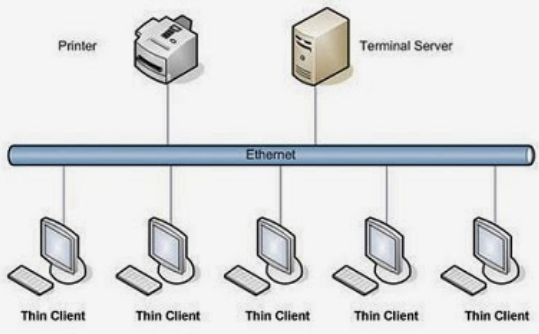
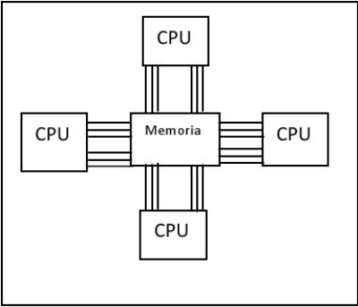

4.1 Aspectos Basicos de la Computadora Paralela
Aspectos Basicos de la Computadora Paralela
● ¿Qué es la Computación Paralela?:
○ Definición: Es la técnica de dividir un problema grande en subproblemas más pequeños, que luego son resueltos simultáneamente por múltiples procesadores.
○ Objetivo Principal: Reducir el tiempo de ejecución de una aplicación y resolver problemas que serían inviables con un solo procesador.
● Conceptos Clave:
○ Procesador/Núcleo (Core): La unidad física que ejecuta instrucciones.
○ Hilo (Thread): La secuencia de instrucciones más pequeña que puede ser gestionada de forma independiente.
○ Ley de Amdahl: Establece la mejora máxima de velocidad de un programa, limitada por su parte secuencial (no paralelizable).
● Analogía: Construir una Casa:
○ Secuencial: Una persona hace todos los trabajos (cimientos, paredes, techo) uno tras otro.

4.2 Tipos de Computacion Paralela
Tipos de Computacion Paralela
1.- Paralelismo a Nivel de Bit:
○ Concepto: Aumentar el tamaño de la palabra de datos que un procesador puede manejar (ej. de 16 bits a 32 bits, a 64 bits).
○ Ventaja: Más datos procesados por ciclo de reloj.
2.- Paralelismo a Nivel de Instrucción (ILP):
○ Concepto: Ejecutar múltiples instrucciones de un mismo programa al mismo tiempo dentro de un solo procesador.
○ Ejemplo: Arquitecturas pipeline y superscalar.
3.- Paralelismo a Nivel de Hilo (TLP):
○ Concepto: Múltiples hilos (de uno o varios procesos) se ejecutan concurrentemente en los núcleos de un procesador.
○ Ejemplo: Procesadores multinúcleo.
4.- Paralelismo a Nivel de Tarea/Proceso:
○ Concepto: Tareas o procesos completamente independientes se ejecutan en paralelo en diferentes procesadores.
○ Ejemplo: Servidor web atendiendo múltiples usuarios a la vez.
4.3 Sistema de Memoria Compartida
Sistema de Memoria Compartida
¿Qué es?:
○ Múltiples procesadores (núcleos) comparten un único espacio de direcciones de memoria física.
○ Todos los procesadores acceden a esta memoria global a través de un bus o una red de interconexión.
Arquitectura UMA (Uniform Memory Access):
○ Característica Principal: El tiempo de acceso a la memoria es igual para todos los procesadores, sin importar qué procesador realiza la solicitud.
○ Ventaja: Programación más sencilla. La comunicación entre procesos se realiza leyendo y escribiendo en la memoria compartida.
○ Desventaja: El bus de memoria puede convertirse en un cuello de botella al aumentar el número de procesadores.
○ Ejemplo: Computadores multinúcleo tradicionales, servidores SMP (Symmetric Multi-Processing).
Arquitectura NUMA (Non-Uniform Memory Access):
○ Característica Principal: El tiempo de acceso a la memoria NO es uniforme. Cada procesador tiene una memoria local de acceso rápido, pero también puede acceder a la memoria remota de otros procesadores (más lento).
○ Ejemplo: Ventaja: Escalabilidad superior a UMA. Reduce la contención en el bus.
○ Desventaja: La programación debe ser consciente de la localidad de los datos para maximizar el rendimiento.
○ Ejemplo: Servidores de gama alta con múltiples sockets de procesadores.
4.4 Sistema de Memoria Distribuida
Sistema de Memoria Distribuida
¿Qué es?:
○ Cada procesador (nodo) tiene su propia memoria privada e independiente.
○ No existe un espacio global de direcciones de memoria.
○ Los nodos están conectados mediante una red de alta velocidad (ej: InfiniBand, Ethernet).
Caracteristicas:
○ Comunicación: La interacción entre procesos en diferentes nodos se realiza mediante el paso de mensajes (Message Passing).
○ Escalabilidad: Muy alta. Se pueden conectar miles de nodos.
○ Ventaja: No hay cuellos de botella de memoria y el costo es menor.
○ Desventaja: La programación es más compleja. El programador debe gestionar explícitamente la comunicación y la distribución de datos.
¿Cómo funciona?:
○ Múltiples nodos conectados en red comparten su memoria RAM
○ Abstracción unificada que presenta memoria distribuida como un solo espacio
○ Comunicación mediante protocolos de red (TCP/IP, InfiniBand, RDMA)
○ Sincronización para mantener coherencia entre nodos
Ventajas clave:
Rendimiento:
○ Acceso más rápido que disco
○ Paralelismo masivo
○ Menos cuellos de botella
Escalabilidad:
○ Agregar nodos aumenta capacidad
○ Escala horizontalmente
○ Balanceo de carga automático
Confiabilidad:
○ Tolerancia a fallos
○ Alta disponibilidad
○ Recuperación automática
Usos de Sistemas de Memoria Distribuida:
1. Caché distribuido - Compartir datos de caché entre múltiples servidores
2.Sesiones de usuario compartidas - Sesiones accesibles desde cualquier servidor web
3.Procesamiento de big data - Análisis de grandes volúmenes de datos en memoria
4. Bases de datos en memoria - Almacenamiento rápido de datos distribuidos
5. Computación científica - Procesamiento paralelo de simulaciones y cálculos
6.Sistema de mensajería - Colas de mensajes distribuidas y pub/sub
7. Almacenamiento de configuración - Configuraciones centralizadas accesibles por todos los nodos
8. Juegos online - Estado de juego compartido entre servidores
9. Comercio electrónico - Carritos de compra y inventario distribuido
10. Análisis en tiempo real - Procesamiento de streams de datos inmediato
11. Machine Learning distribuido - Entrenamiento de modelos en paralelo
12. API caching - Respuestas de API cacheadas across múltiples instancias
13. Balanceo de carga stateful - Distribución inteligente de carga con estado compartido
14.Sistemas de recomendación - Datos de perfil de usuario accesibles globalmente
15. Monitorización en tiempo real - Métricas y logs compartidos para monitoring

4.5 Casos de Estudio
Casos de Estudio
Aspectos basicos de la computacion paralela:
● ¿Qué es la Computación Paralela?:
○ Caso: Comparar el rendimiento de un algoritmo en 1, 2, 4, 8 y 16 procesadores.
○ Ejemplo: Paralelización de multiplicación de matrices y evaluación de ganancia.
● Granularidad y balance de carga:
○ Caso: Procesamiento de imágenes donde algunas regiones requieren más cálculo que otras.
Tipos de computación paralela:
● Paralelismo a nivel de instrucción (ILP):
○ Caso: Procesadores superescalares (Intel, AMD).
● Paralelismo a nivel de hilo (TLP):
○ Caso: Servidores web manejando múltiples solicitudes simultáneamente.
● Paralelismo a nivel de datos (Data Parallelism):
○ Caso: Aplicación de filtros a imágenes o operaciones sobre grandes arreglos en GPUs.
● Paralelismo a nivel de tareas (Task Parallelism):
○ Caso: Simulación de clima donde diferentes tareas (viento, temperatura, presión) se ejecutan concurrentemente.
Sistema de memoria compartida:
● Programación con hilos (pthreads, OpenMP):
○ Caso: Cálculo paralelo de π usando integración numérica con OpenMP.
● Problemas de sincronización:
○ Caso: Implementación de un buffer multihilo productor-consumidor con mutex y semáforos.
● Arquitecturas UMA y NUMA:
○ Caso: Comparación de rendimiento en sistemas multiprocesador (ej. servidores NUMA como los de AMD Epyc).
Sistemas de memoria distribuida:
● Passing de mensajes (MPI):
○ Caso: Resolución paralela de ecuaciones en derivadas parciales en un cluster.
● Computación en clusters y grids:
○ Caso: Proyecto SETI@home o procesamiento de datos del LHC (Large Hadron Collider).
● Algoritmos distribuidos:
○ Caso: Algoritmo de elección de líder en un anillo de procesos.